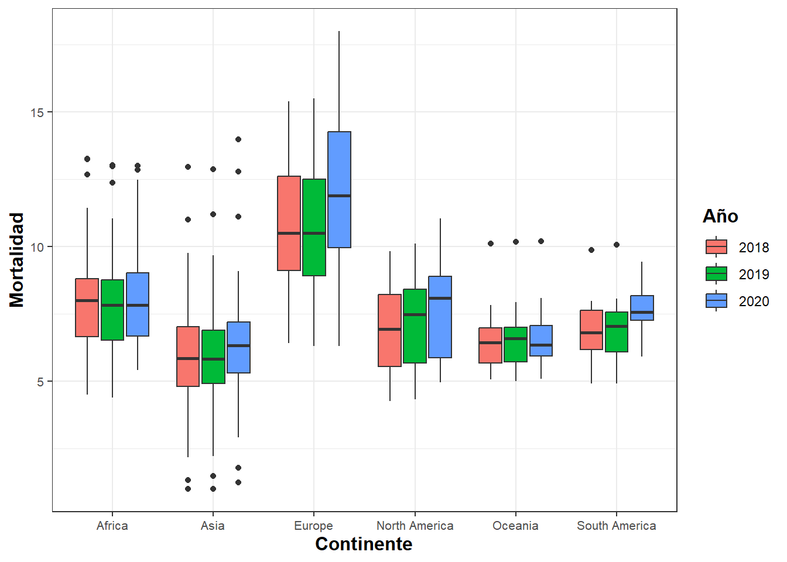
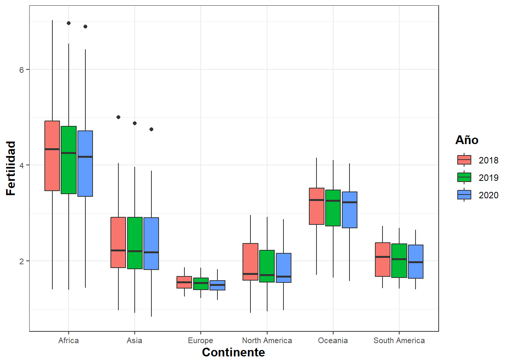
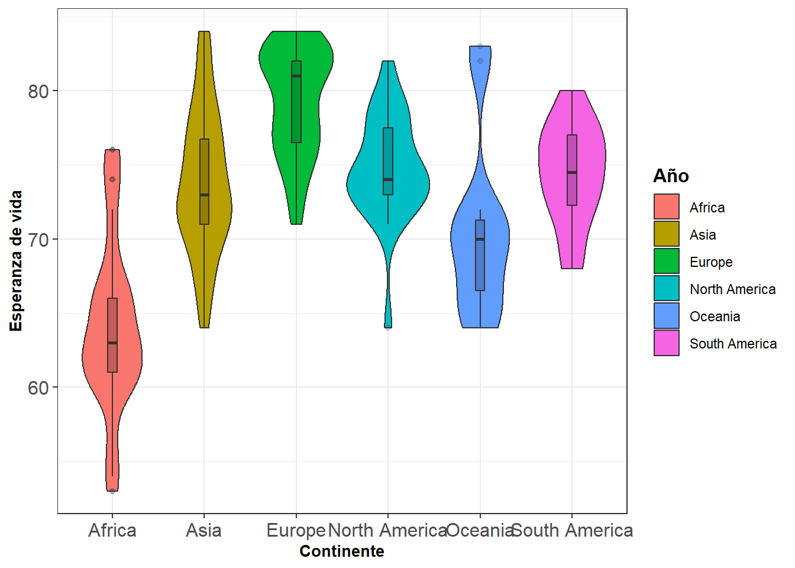
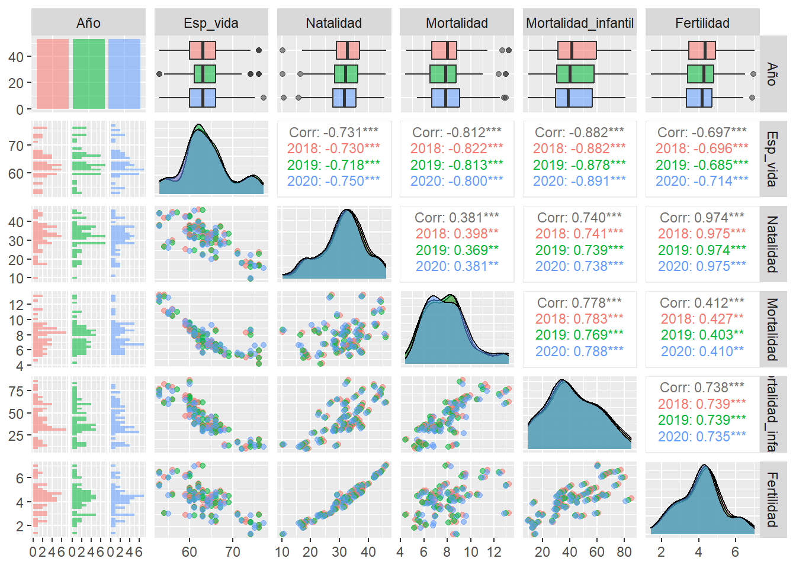
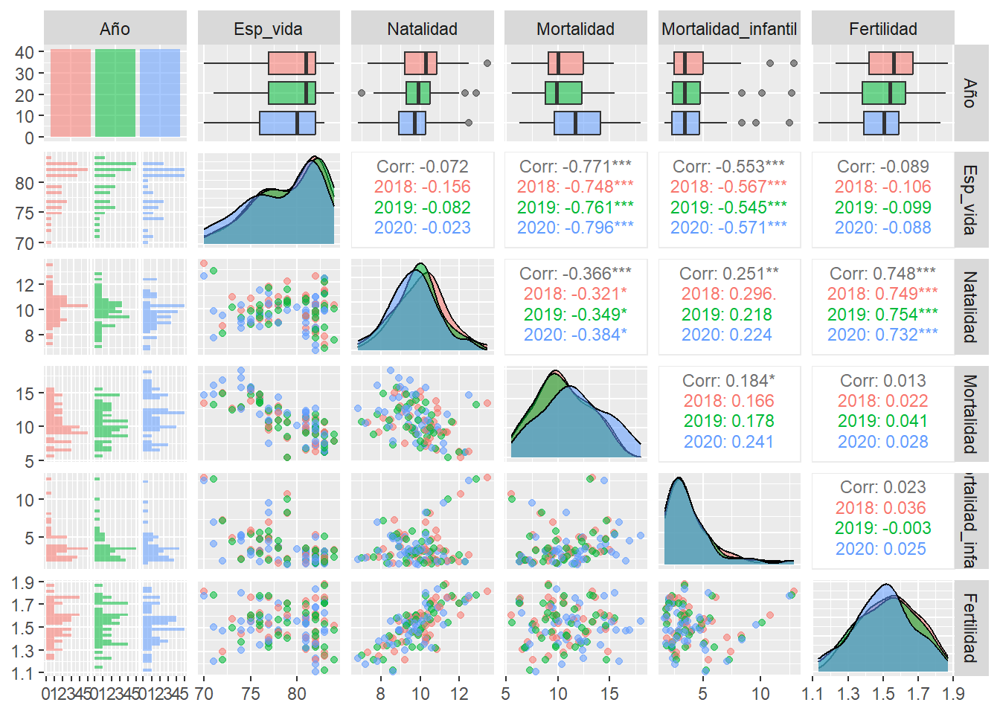
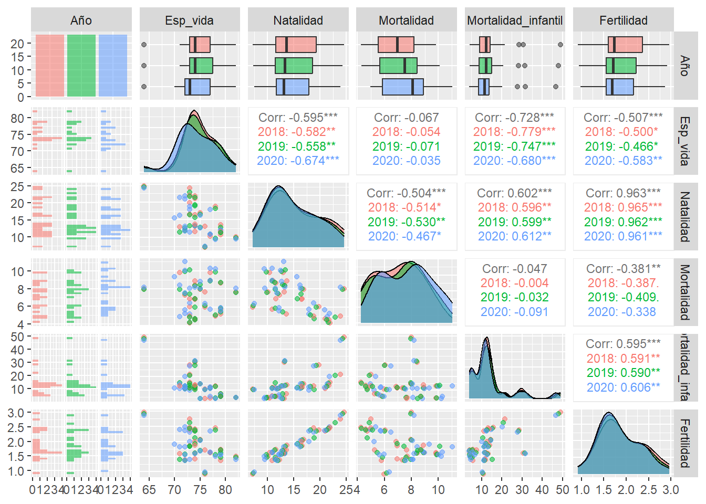

Rows: 1,073
Columns: 14
$ Country <chr> "Afghanistan", "Afghanistan", "Afghanistan", "…
$ Year <dbl> 2017, 2018, 2019, 2020, 2021, 2017, 2018, 2019…
$ `Total Population` <chr> "-", "36,686,784", "37,769,499", "38,972,230",…
$ `Urban Population` <chr> "-", "9,353,296", "9,727,157", "10,142,913", "…
$ `Rural Population` <chr> "-", "27,333,488", "28,042,342", "28,829,317",…
$ `Population Density` <chr> "55", "56", "58", "60", "-", "105", "105", "10…
$ `Life Expectancy` <chr> "63.0", "63.0", "64.0", "63.0", "62.0", "79.0"…
$ `Birth Rate` <dbl> 37.342, 36.927, 36.466, 36.051, 35.842, 10.870…
$ `Death Rate` <dbl> 7.027, 6.981, 6.791, 7.113, 7.344, 8.150, 8.30…
$ `Fertility Rate` <chr> "5.129", "5.002", "4.87", "4.75", "4.643", "1.…
$ `Infant Mortality Rate` <chr> "49.4", "47.8", "46.3", "44.8", "43.4", "8.3",…
$ `Growth Rate` <chr> "-", "3.0", "3.0", "3.0", "3.0", "-", "0.0", "…
$ Continent <chr> "Asia", "Asia", "Asia", "Asia", "Asia", "Europ…
$ Area_km2 <dbl> 652230, 652230, 652230, 652230, 652230, 28748,…Demografía Mundial
El link a nuestro repositorio es: GitHub
Introducción
Este proyecto recoge datos poblacionales de los países del mundo, tomados en 3 años consecutivos (del 2018 al 2020) y pretende estudiarlos y analizarlos a nivel continental para ver si existen diferencias significativas entre continentes.
Para ello, analizaremos cada continente individualmente y nos centraremos en entender las diferencias que puedan haber; es decir, aportar información histórica, si se da el caso, que pueda explicar los aumentos o decrementos de los valores demográficos.
Los datos utilizados se han sacado de los siguientes enlaces:
Descripción variables
Ahora que ya tenemos bien construida nuestra base de datos, hagamos una breve explicación de las distintas variables que lo conforman:
País: (chr) nombre del país de estudio.
Continente: (chr) continente al que pertenece cada país.
Area_km2: (int) área en \(\textit{km}^2\) que ocupa cada uno de los países.
Año: (ord) año en el que fueron tomados los datos. Valores del 2018 al 2020.
Pob_total: (int) número total de habitantes de cada país.
Pob_urbana y Pob_rural: (int) numéro de habitantes que residen en una localidad urbana y en una rural, respectivamente.
Densidad: (int) densidad de cada país; recordemos que la densidad viene dada por el cociente: \(\textit{Densidad} = \displaystyle \frac{\textit{Pob_total}}{\textit{Area_km2}}\).
Esp_vida: (int) edad media que pueden alcanzar los individuos de cada país.
Natalidad y Mortalidad: (num) número de personas que nacen y fallecen en un año y país determinado, por cada 1000 habitantes.
Fertilidad: (num) número de hijos que puede llegar a tener una mujer si viviera todos sus años fértiles de cada país.
Mortalidad_infantil: (num) número total de defunciones de menores de un año de vida, por cada 1000 nacidos vivos.
Crecimiento: (ord) cambio en el número de individuos de un país en un tiempo determinado. Valores: -5 a 5
Carga de datos y limpieza
Empezamos con la carga de los dataframes que usaremos y veamos la estructura del nuevo tibble.
Ahora, procedemos con la limpieza; para empezar, renombramos las columnas con la función rename(), ya que sus nombres estaban en inglés, y cambiamos la posición de algunas variables con la función relocate(), para que las variables sigan un orden lógico.
Además, cambiaremos el tipo de algunas variables ya que queremos que se ajusten a las necesidades del estudio. Para ello, utilizamos la función mutate().
Visualicemos el conjunto de datos que presentan algún valor NA.
# A tibble: 5 × 14
Año Pais Continente Area_km2 Pob_total Pob_urbana Pob_rural Densidad
<chr> <int> <int> <int> <int> <int> <int> <int>
1 2017 0 23 23 209 209 209 11
2 2018 0 24 24 0 2 12 13
3 2019 0 24 24 0 2 12 13
4 2020 0 24 24 0 2 12 13
5 2021 0 24 24 0 2 12 216
# ℹ 6 more variables: Esp_vida <int>, Natalidad <int>, Mortalidad <int>,
# Mortalidad_infantil <int>, Fertilidad <int>, Crecimiento <int>Como vemos, tenemos bastantes datos faltantes en los años 2017 y 2021; por eso, reduciremos nuestro estudio entre los años 2018 y 2020. Utilizaremos la función filter() para eliminar los dos años de nuestro tibble.
Ahora, trataremos particularmente los datos NA de las variables Contiente y Area_km2, ya que son las variables que hemos añadido de otro dataframe. En este caso, rellenaremos manualmente. La información con la que hemos completado estos valores se han sacado de las correspondientes páginas web de Wikipedia de cada uno de los países.
Visualizamos la estructura del dataframe resultante de la limpieza:
Rows: 648
Columns: 14
$ Pais <chr> "Afghanistan", "Afghanistan", "Afghanistan", "Alba…
$ Continente <chr> "Asia", "Asia", "Asia", "Europe", "Europe", "Europ…
$ Area_km2 <dbl> 652230, 652230, 652230, 28748, 28748, 28748, 23817…
$ Año <chr> "2018", "2019", "2020", "2018", "2019", "2020", "2…
$ Pob_total <dbl> 36686784, 37769499, 38972230, 2866376, 2854191, 28…
$ Pob_urbana <dbl> 9353296, 9727157, 10142913, 1728969, 1747593, 1762…
$ Pob_rural <dbl> 27333488, 28042342, 28829317, 1137407, 1106598, 10…
$ Densidad <int> 56, 58, 60, 105, 104, 104, 18, 18, 18, 242, 237, 2…
$ Esp_vida <int> 63, 64, 63, 79, 79, 77, 76, 76, 74, NA, NA, NA, NA…
$ Natalidad <dbl> 36.927, 36.466, 36.051, 10.517, 10.343, 10.285, 24…
$ Mortalidad <dbl> 6.981, 6.791, 7.113, 8.308, 8.480, 10.785, 4.482, …
$ Mortalidad_infantil <dbl> 47.8, 46.3, 44.8, 8.3, 8.4, 8.4, 20.6, 20.1, 19.6,…
$ Fertilidad <dbl> 5.002, 4.870, 4.750, 1.440, 1.414, 1.400, 3.023, 2…
$ Crecimiento <chr> "3.0", "3.0", "3.0", "0.0", "0.0", "-1.0", "2.0", …Análisis multivariante exploratorio
Una vez hecha la limpieza, empezamos con el análisis multivariante. Debido a que nos interesa realizar un estudio por continentes y por año, utilizaremos la función group_by(), para poder agrupar nuestros datos en base a nuestros intereses. Primero, veamos la población total por continentes en los diferentes años:
# A tibble: 18 × 3
# Groups: Continente [6]
Continente Año `Población total`
<chr> <chr> <dbl>
1 Africa 2018 1267973300
2 Africa 2019 1299722341
3 Africa 2020 1332001684
4 Asia 2018 4551390293
5 Asia 2019 4591104253
6 Asia 2020 4627046275
7 Europe 2018 747225176
8 Europe 2019 747609915
9 Europe 2020 747519807
10 North America 2018 577352828
11 North America 2019 581350287
12 North America 2020 586825619
13 Oceania 2018 42542878
14 Oceania 2019 43234733
15 Oceania 2020 43901335
16 South America 2018 426223875
17 South America 2019 429922107
18 South America 2020 433273442Vemos que el contiente con más población es Asia, seguido de África; en cambio, el continente menos poblado es Oceanía. Vamos a visualizar ahora como se distribuye esta población en los diferentes continentes; para ello, hemos escogido el año 2019 para representar las posibles diferencias entre continentes, ya que, como vemos a continuación, los datos del mismo continente en los diferentes años no varía considerablemente.
# A tibble: 18 × 4
# Groups: Continente [6]
Continente Año `Población urbana` `Población rural`
<chr> <chr> <dbl> <dbl>
1 Africa 2018 537897701 730075599
2 Africa 2019 557456213 742266128
3 Africa 2020 577565105 754436579
4 Asia 2018 2179364987 2188304798
5 Asia 2019 2224968208 2180304905
6 Asia 2020 2268311597 2171118286
7 Europe 2018 555006254 189343444
8 Europe 2019 556922779 187795721
9 Europe 2020 558499505 186112306
10 North America 2018 453489706 120112644
11 North America 2019 458047980 119551791
12 North America 2020 463788723 119199946
13 Oceania 2018 27888434 13788474
14 Oceania 2019 28360668 14007257
15 Oceania 2020 28816244 14215417
16 South America 2018 357982255 68241620
17 South America 2019 361888325 68033782
18 South America 2020 365566629 67706813
Attaching package: 'cowplot'The following object is masked from 'package:lubridate':
stamp
Lo primero que nos llama la atención es que en América, en general, la mayoría de la población se concentra más en la zonas urbanas. Como también en Europa y Oceanía pero de manera menos notoria.
Por otro lado, la población en Asia se reparte de manera igualitaria en las dos zonas. Y, finalmente, en África, todo lo contrario, la mayoría de la población se concentra más en la zona rural.
Vamos a visualizar ahora los valores medios, por continente y año de las diferentes variables del estudio. Empezamos con la natalidad:

Analicemos bien estos resultados. Como vemos, llama la atención los valores que presenta Europa. Como vemos a continuación, la media de personas que nacen por año en este continente es realativamente baja: aproximadamente 10 recién nacidos por cada 1000 habitantes.
# A tibble: 3 × 2
Año media
<chr> <dbl>
1 2018 10.1
2 2019 9.74
3 2020 9.39Además, nos encontramos con el el índice mínimo de natalidad lo encontramos en South Korea, Ásia, las causas se deben a distintos factores como el alto costo de la vida, la presión económica o la desigualdad entre hombres y mujeres en el ámbito laboral, esta diferencia salarial entre hombres y mujeres, provoca que las personas gestantes se vean en la tesitura de elegir entre tener hijos o una carrera profesional.
# A tibble: 1 × 3
Pais Año Natalidad
<chr> <chr> <dbl>
1 South Korea 2020 5.3# A tibble: 1 × 3
Pais Año Natalidad
<chr> <chr> <dbl>
1 South Korea 2020 5.3Nos econtramos con que África presenta los valores de natalidad más altos; en concreto, la tasa de máxima natalidad la encontramos en Níger, Africa, se trata de uno de los países más pobres del mundo con una notable desigualdad de género, que incluye la falta de oportunidades educativas para las mujeres, que desencadena en el matrimonio y el parto precoces. La natalidad és tanta, que a pesar de que la tasa de mortalidad infantil sea muy alta, nos encontramos con que la tasa de crecimiento toma uno de los valores más elevados a nivel mundial.
# A tibble: 3 × 2
Año media
<chr> <dbl>
1 2018 31.7
2 2019 31.3
3 2020 30.8Como vemos, los valores difieren significativamente de los de Europa. No vemos diferencias significativas por años en ningún continente.
Continuamos con la mortalidad:

Igual que antes, Europa es el continente con el índice de mortalidad más alto. Veamos cual es el pais con más tasa de mortalidad en los disitintos años:
data_18 = world_population[world_population$Año == "2018",]
data_18[which.max(data_18$Mortalidad),] %>%
select(Pais, Año, Mortalidad)# A tibble: 1 × 3
Pais Año Mortalidad
<chr> <chr> <dbl>
1 Bulgaria 2018 15.4data_19 = world_population[world_population$Año == "2019",]
data_19[which.max(data_19$Mortalidad),] %>%
select(Pais, Año, Mortalidad)# A tibble: 1 × 3
Pais Año Mortalidad
<chr> <chr> <dbl>
1 Bulgaria 2019 15.5data_20 = world_population[world_population$Año == "2020",]
data_20[which.max(data_20$Mortalidad),] %>%
select(Pais, Año, Mortalidad)# A tibble: 1 × 3
Pais Año Mortalidad
<chr> <chr> <dbl>
1 Bulgaria 2020 18Vemos que el país con más mortalidad del mundo es Bulgaria; tras investigar un poco, hemos observado que se trata del país con más pobreza de la UE, con una inversión en el sistema sanitario muy bajo, lo que imlicó ser el país de la UE con más muertes a lo largo de la pandemia. Añadiendo que la tasa de desempleo es muy alta, tenemos como consecuencia una tasa de natalidad muy baja.
Fijémonos también en los diferentes valores por años:
# A tibble: 3 × 2
Año media
<chr> <dbl>
1 2018 9.76
2 2019 9.57
3 2020 10.6 En 2020, aumenta el número de fallecidos. Como vemos, en la mayoría de continentes ocurre lo mismo.
Vamos ahora con la mortalidad infantil.
África es el continente con más mortalidad infantil, con diferencia. Ilustremos estos valores:
# A tibble: 3 × 2
Año media
<chr> <dbl>
1 2018 43.2
2 2019 42.2
3 2020 41.2En concreto, mueren al año 43 niños/niñas por cada 1000 nacimientos. Teniendo en cuenta el número de nacimientos en este continente, esto equivale a 1.5 millones de muertes infantiles, cada año.
También nos llama la atención el valor máximo de Norteamérica, y tras investigar un poco, encontramos que en 2018 hubo un terremoto en Haití, que hizo que las tasas de mortalidad infantil augmentaran respecto al resto de años; sin embargo, en general, las tasas en Haití siguen siendo muy altas. Esto viene provocado por la situación de pobreza y de insalubridad, que causan enfermedad y sufrimiento entre la población infantil, un 8% de la cual sufre desnutrición grave y el 22% padece desnutrición crónica.
north_am = world_population[world_population$Continente == "North America",]
north_am[which.max(north_am$Mortalidad_infantil),] %>%
select(Pais, Año, Mortalidad_infantil)# A tibble: 1 × 3
Pais Año Mortalidad_infantil
<chr> <chr> <dbl>
1 Haiti 2018 49.2Por otro lado, Europa presenta unos valores mínimos en mortalidad infantil:
# A tibble: 3 × 2
Año media
<chr> <dbl>
1 2018 3.90
2 2019 3.79
3 2020 3.68Por último, veamos la fertilidad:

Observemos que la mayor tasa de fertilidad total está en África, veamos los datos:
# A tibble: 3 × 2
Año media
<chr> <dbl>
1 2018 4.23
2 2019 4.16
3 2020 4.10Entonces, nos encontramos que de media, cada persona gestante de África, tendría 4 hijos de acuerdo con la tasa de fertilidad específica por edad.
Además, observemos que Europa es el continente con menor tasa de fertilidad. Vamos a ver cuántos hijos de media tendrían las personas gestantes de este continente.
# A tibble: 3 × 2
Año media
<chr> <dbl>
1 2018 1.55
2 2019 1.53
3 2020 1.51Otra variable interesante en nuestro estudio es la esperanza de vida. Veamos representada la distribución de esta variable en cada continente, en un año concreto (2019).

Resalta África; la esperanza de vida es mucho más baja que en los demás continentes, veamos cuál és el país que presenta una esperanza de vida más baja:
world_population[which.min(world_population[world_population$Esp_vida>0,]$Esp_vida),] %>%
select(Pais, Año, Esp_vida)# A tibble: 1 × 3
Pais Año Esp_vida
<chr> <chr> <int>
1 Chad 2018 53La esperanza de vida és un claro indicador de la calidad de vida de un determinado país; así, teniendo en cuenta las enfermedades causadas por la falta de agua, la poca asistencia médica y la desnutrición, hacen que Chad sea el país con una esperaza de vida de tan solo 53 años, siendo la más baja del mundo.
De la misma forma, veamos qué país presenta una esperanza de vida más alta:
world_population[which.max(world_population$Esp_vida),] %>%
select(Pais, Año, Esp_vida)# A tibble: 1 × 3
Pais Año Esp_vida
<chr> <chr> <int>
1 Hong Kong 2018 85Los motivos podrían ser su estilo de vida activo y saludable acompañado de una dieta rica en alimentos cocinados al vapor y el alto consumo de diferentes variedades de tés.
Estimación y correlaciones
Vemos aquí el vector de medias por continentes y año:
# A tibble: 18 × 11
# Groups: Continente [6]
Continente Año `Población media` `Población rural media`
<chr> <chr> <dbl> <dbl>
1 Africa 2018 23924025. 13775011.
2 Africa 2019 24523063. 14005021.
3 Africa 2020 25132107. 14234652.
4 Asia 2018 103992138. 52102495.
5 Asia 2019 104887455. 51912022.
6 Asia 2020 105700712. 51693293.
7 Europe 2018 19085890. 4854960.
8 Europe 2019 19095346. 4815275.
9 Europe 2020 19092611. 4772110.
10 North America 2018 24939233. 5222289.
11 North America 2019 25113034. 5197904.
12 North America 2020 25347333. 5182606.
13 Oceania 2018 3473076. 1149040.
14 Oceania 2019 3530660. 1167271.
15 Oceania 2020 3585972. 1184618.
16 South America 2018 30444562. 4874401.
17 South America 2019 30708722. 4859556.
18 South America 2020 30948103 4836201.
# ℹ 7 more variables: `Población urbana media` <dbl>, `Densidad media` <dbl>,
# `Esperanza media de vida` <dbl>, `Natalidad media` <dbl>,
# `Mortalidad media` <dbl>, `Mortalidad infantil media` <dbl>,
# `Fertilidad media` <dbl>El vector de medias global, dividido en años es el siguiente:
Rows: 3
Columns: 10
$ Año <chr> "2018", "2019", "2020"
$ Población_total <dbl> 40554622, 40981441, 41395285
$ Población_rural <dbl> 18086703, 18098140, 18102674
$ Población_urbana <dbl> 22467920, 22883301, 23292611
$ Densidad <dbl> 127.3333, 128.5191, 129.7541
$ Esperanza_de_vida <dbl> 71.91803, 72.09836, 71.45355
$ Natalidad <dbl> 20.46535, 20.09978, 19.73060
$ Mortalidad <dbl> 7.803743, 7.774290, 8.323546
$ Mortalidad_infantil <dbl> 21.90765, 21.38087, 20.80820
$ Fertilidad <dbl> 2.718836, 2.677464, 2.635984Empezamos ahora con las matrices de correlación; como nuestro estudio se centra en estudiar cada continente por separado, hemos hecho un gráfico ggpairs() para cada continente.
Asia
África

Europa

Norteamérica

Oceania
Sudamérica
En general, observamos una clara asociación positiva entre la Fertilidad y la Natalidad; de la misma forma, notamos la asociación positiva entre la Natalidad y la Mortalidad infatil; además también podemos apreciar la asociación negativa entre la Esperanza de vida y la Mortalidad infantil. En cuanto a las funciones de densidad, observamos que en todos los continentes, las funciones de densidad no varian en los años 2018 y 2019; sin embargo, sí que encontramos variaciones significativas al analizar la función de densidad de 2020: la Esperanza de vida disminuye, mientras que la Mortalidad augmenta en todos los continentes.
Para confirmar estas posibles correlaciones, realizaremos unos tests de correlación.
Pearson's product-moment correlation
data: world_population$Natalidad and world_population$Fertilidad
t = 112.52, df = 628, p-value < 2.2e-16
alternative hypothesis: true correlation is greater than 0
95 percent confidence interval:
0.972772 1.000000
sample estimates:
cor
0.9760841
Pearson's product-moment correlation
data: world_population$Natalidad and world_population$Mortalidad_infantil
t = 42.088, df = 583, p-value = 1
alternative hypothesis: true correlation is less than 0
95 percent confidence interval:
-1.0000000 0.8833144
sample estimates:
cor
0.8673972
Pearson's product-moment correlation
data: world_population$Esp_vida and world_population$Mortalidad_infantil
t = -51.725, df = 571, p-value < 2.2e-16
alternative hypothesis: true correlation is less than 0
95 percent confidence interval:
-1.0000000 -0.8949037
sample estimates:
cor
-0.907808 Por lo tanto, podemos concluir que las variables Natalidad y Fertilidad están correlacionadas positivamente; al igual que las de Natalidad y la de Mortalidad infantil, esto no nos debe estrañar, ya que cuántos más nacimientos, más alta será la tasa de Mortalidad infantil; por último, tenemos que las variables de Esperanza de vida y Mortalidad infantil están correlacionadas negativamente, ya que cuánta más Mortalidad infantil más baja será la Esperanza de vida.
Conclusiones
En conclusión, observamos diferencias entre los distintos continentes, sin embargo, diferenciando por años, no encontramos cambios significativos. Además hemos confirmado las correlaciones positivas entre las variables de Natalidad y Fertilidad, y Natalidad con Mortalidad infantil; además tenemos correlación negativa entre la Esperanza de vida y la Mortalidad infantil. Por último, hemos visto que la mayoría de los outliers y valores máximos y mínimos están justificados por eventos históricos o por las cualidades propias de cada país.